تو مترو گم شدی؟
ما هم شده بودیم.
متو
مسیریاب مترو
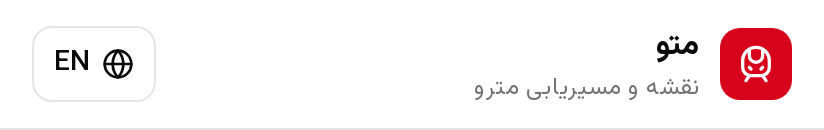
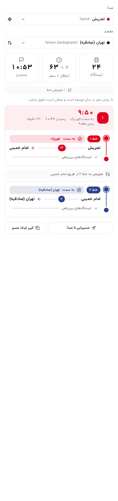
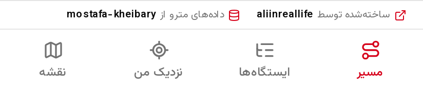
مسیریاب هوشمند
مبدأ، مقصد، تمام
ایستگاهها، تعویض خط و ساعت رسیدن، یکجا. لینک مسیر را هم کپی کن.

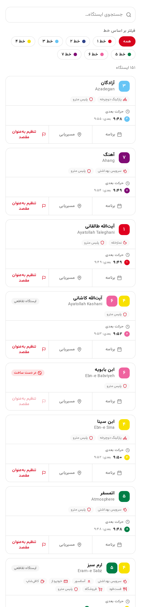
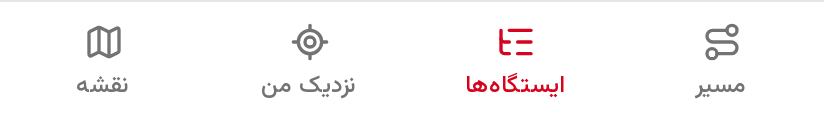
برنامهٔ حرکت قطارها
نه حدس،
جدول قطار
جدول قطار
ساعت حرکت بعدی هر ایستگاه، برای روزهای عادی و تعطیل.

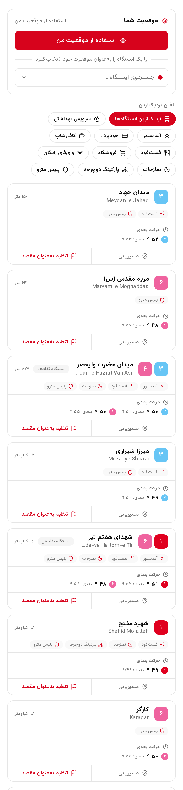
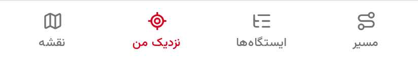
نزدیک من
نزدیکترین ایستگاه، با یک لمس
فاصله و حرکت بعدیِ ایستگاههای اطراف، با فیلتر امکانات.
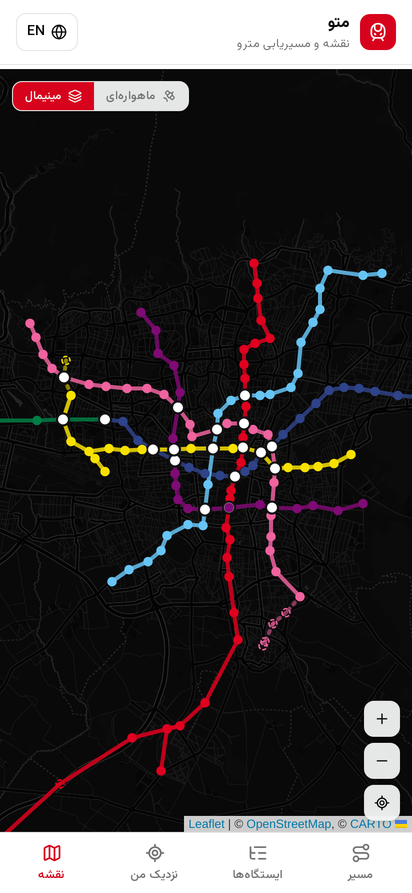
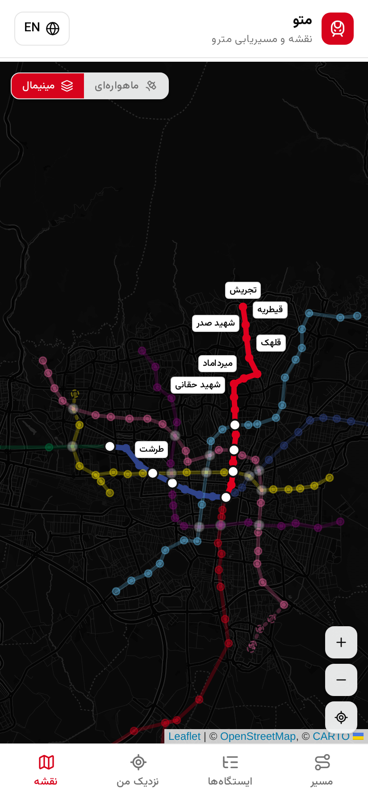
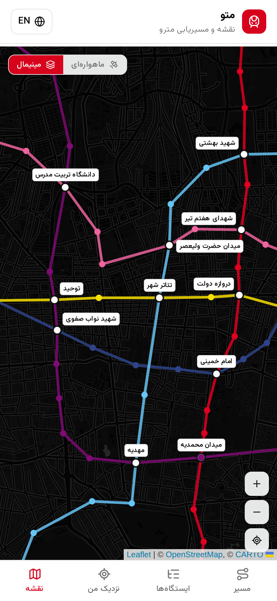
نقشهٔ مترو
کل شبکه،
روی یک نقشه
روی یک نقشه
مسیرت روی نقشه پررنگ میشود و با زوم کردن، نام ایستگاهها پیدا میشود.

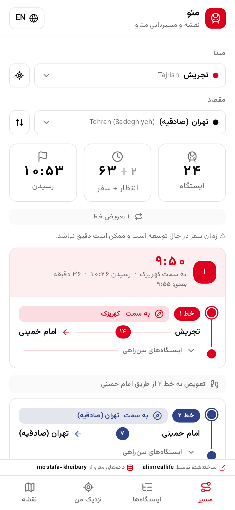
همهجا همراهت
۱۵۱ ایستگاه، ۷ خط
۱
۲
۳
۴
۵
۶
۷
فارسی و English
مسیریابی بدون اینترنت
شهرهای بیشتر در راه
همین حالا مسیرت را پیدا کن
metto.ir
رایگان